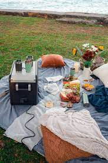
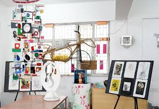

Welcome to Winc-Winc, the premier online dating site for singles looking for love. Our community is full of
interesting and attractive individuals who are all looking for meaningful connections. Whether you’re looking for
friendship, romance, or something more, we have something for everyone.
At Winc-Winc, we believe that everyone deserves to find love. That’s why we’ve created a safe and welcoming
environment where you can be yourself and connect with like-minded individuals. Our advanced matching algorithm
helps you find compatible matches based on your interests, values, and lifestyle.
Tips for Outdoor Dates

Outdoor dates can be a great way to enjoy nature and spend quality time together. Here
are some tips for outdoor date ideas:
- Go for a hike in a scenic trail or park.
- Have a picnic in a beautiful garden or beach.
- Explore a local farmers market and try out fresh produce together.
- Rent bicycles and go for a ride in a nearby park.
Tips for Cultural Dates

Exploring cultural activities can be a fun way to learn and bond with your date. Here are some tips for
cultural date ideas:
- Visit a museum or art gallery and discuss the exhibits.
- Attend a live music or theater performance.
- Take a cooking class to learn a new cuisine together.
- Explore a local historical site or landmark.
Tips for Fun and Active Dates
Engaging in fun and active dates can bring excitement and create lasting memories. Here are some tips for fun
and active date ideas:
- Go bowling or play mini-golf.
- Have a friendly competition at an arcade or game center.
- Try out a new sport or activity like rock climbing or kayaking.
- Go on a bike ride and explore your city or town.
Join Winc-Winc today and start your journey towards finding love. With thousands of members already signed up,
you’re sure to find someone special. Sign up now and start browsing profiles for free!
We will be using a personalized questionare to figure out who would be you perfect match!
This should only take a couple of minutes so please answer all questions as well you can.